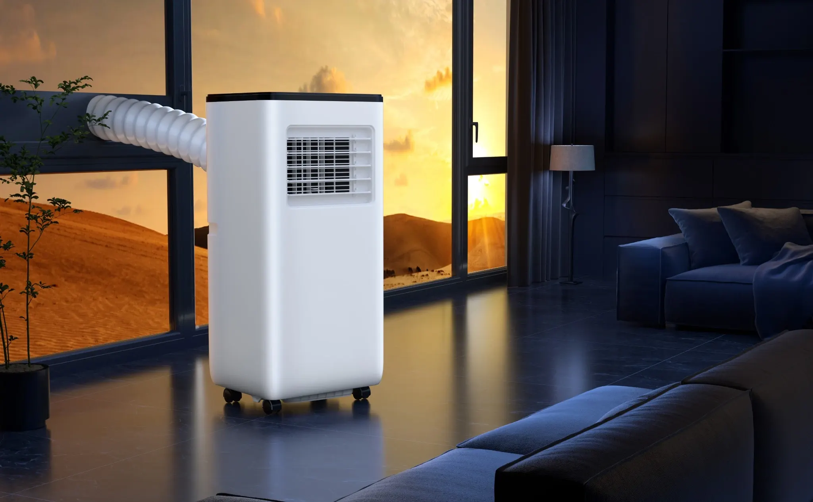
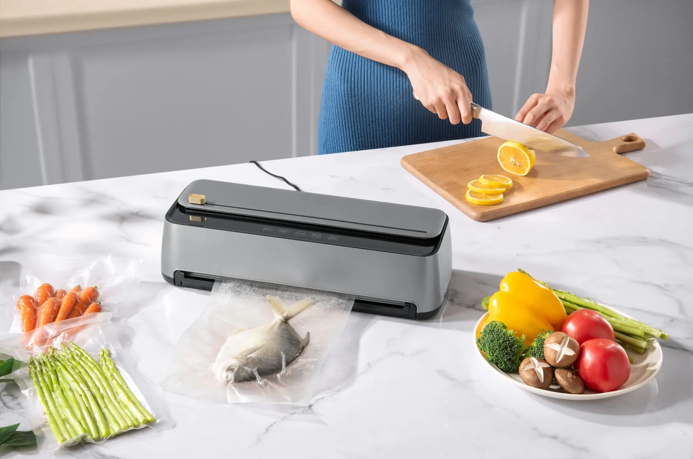

从真实拍摄出发，
延展更丰富的人物与生活方式表达。
实拍人物与 AI 换脸版本并列呈现
保留盖毯展示动作，呈现人物形象变化
展示实拍素材与 AI 处理后的视觉差异
以下三张为新增的 AI 完成图，作为项目延展作品独立展示，不与实拍原图混淆。
以真实居家环境为拍摄基础，通过人物体验、空间氛围、产品形态与局部细节，建立完整的产品视觉叙事。本组为产品实拍策划作品，与 AI 图片生成项目分别呈现。
以生活方式场景建立情绪，再通过不同视角呈现产品的使用状态、外观结构与折叠形态。
让产品融入生活，
也让细节成为购买理由。
围绕厨房清洗、家庭使用与产品特写，结合不锈钢机身、温度显示和出水状态，建立一组兼顾产品识别与生活氛围的摄影画面。
让温度看得见，
让日常用水更从容。
详情页围绕材质、加热、温控、安全与使用场景展开：从 304 不锈钢与 3300W 加热，到水电分离、超温保护和厨房日常使用，让产品信息形成连贯的阅读路径。
从白天快速降温，到夜间安静休息，这台移动空调将多种舒适体验整合在一台设备中。10,000 BTU 制冷能力，适用面积最高约 450 sq.ft.；制冷、除湿、送风与睡眠四种模式灵活切换，并提供 20 L/天除湿能力。配合 24 小时定时、触控面板与遥控器，以及 360° 滚轮和窗户排风套件，让设备在客厅、卧室及办公空间之间灵活使用。
将核心性能、睡眠舒适、节能结构、多空间适用、细节便利性与四步安装组织成连续的 A+ 模块，减少用户理解产品时的认知负担。